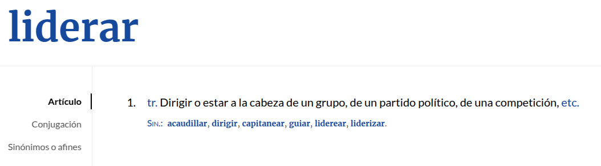
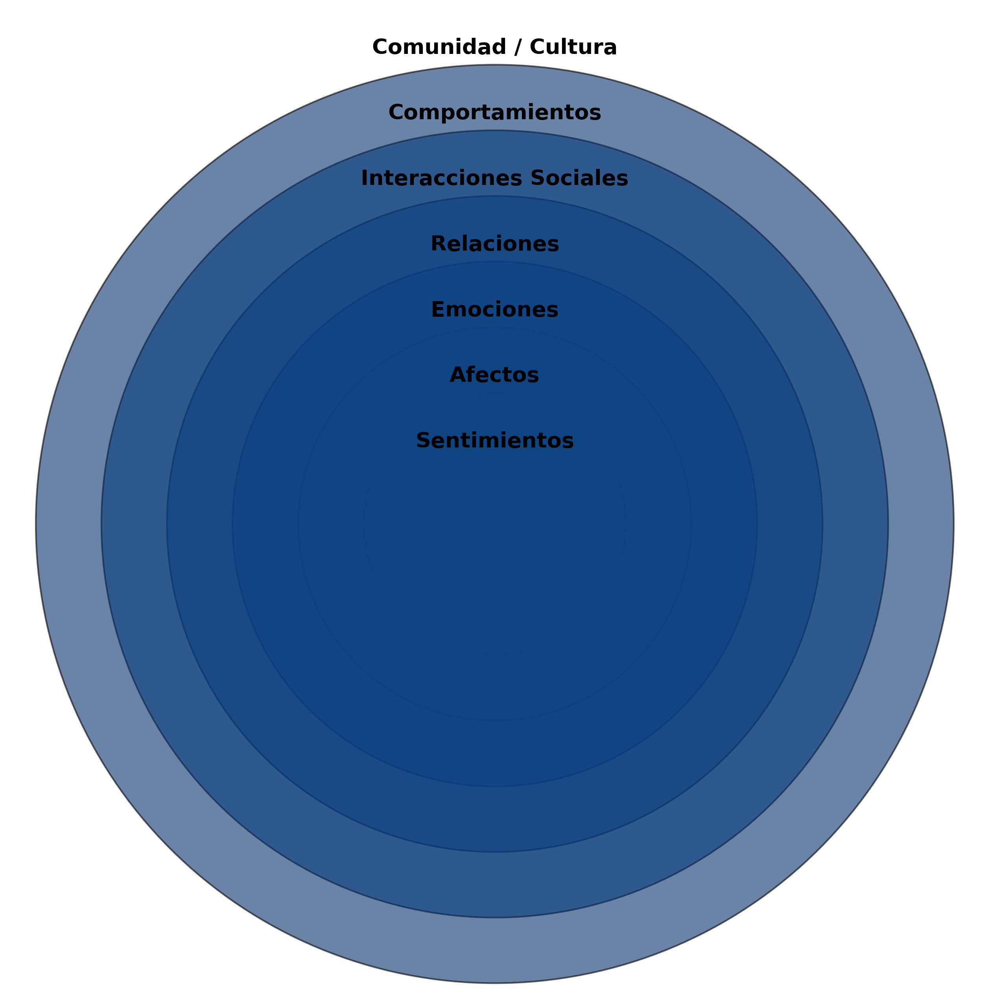
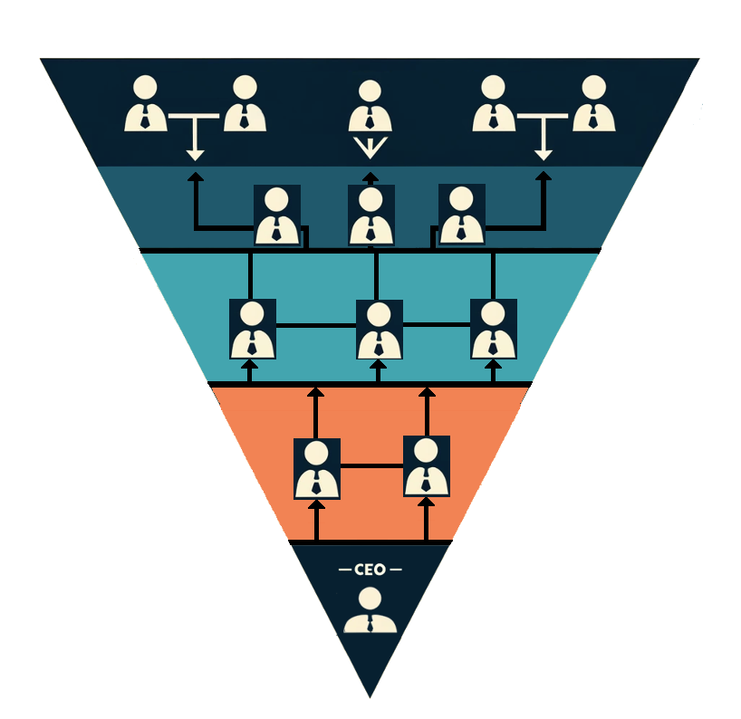

Liderazgo Afectivo

Transformando organizaciones a través de conexiones humanas
Gracias

¿Qué es liderazgo?
¿Qué te imaginas cuando escuchas la palabra "liderazgo"?
La confusión del liderazgo
Liderazgo = Dirigir = Gestionar = Mandar

Me pregunto...
¿Por qué lo llaman liderazgo cuando quieren decir dirigir o gestionar?
¿Por qué lo llaman amor cuando quieren decir sexo?
El poder del liderazgo
El liderazgo seduce más que
la mera gestión
Ser vs Hacer
La gestión tiene que ver con el hacer
El liderazgo tiene que ver con el ser
Definición de Liderazgo
Es la fuerza, la energía
, el alma
que mantiene la cohesión y la unidad de un grupo de personas en el tiempo, más allá de los intereses transaccionales.
Tipos de Fuerza Liderando
- Miedo (autoritario)
- Colaboración (democrático)
- Empatía (humanista)
- Afecto (afectivo)
Liderazgo Afectivo
Es esa fuerza, energia, alma que genera relación, implicación, responsabilidad, cuidado.
El Liderazgo genera Liderazgo
La misión de un líder es crear más líderes
La misión de un líder es crear más líderes
Una consecuencia de un buen liderazgo es que se genera más liderazgo
Liderazgo Compartido
El equipazgo: liderar en equipo
¿Cómo Surge el Liderazgo Afectivo?
- Servicio a los demás
- Confiando en los demás
- Delegando en los demás
- Capacidad de mirar "más allá"
Tarea principal del
Líder Afectivo
Dedicar tiempo y atención a los demás
...que genera relaciones
..que generan afecto
DISCLAIMER
No olvidar
- Que hay que cumplir con los objetivos
- Que hay que marcar limites, crear marcos
- Que hay que hacer seguimiento
Recuerda: Diriges
La Importancia de las Emociones
"Es irracional que un directivo asuma que las personas que dirige puedan ser dirigidas sin tener en cuenta su lado emocional"
Profundidad relacional en el liderazgo afectivo

Los Valores de una Empresa
- Valor Económico
- Valor Intelectual
- Valor Emocional
El Valor Emocional
Lo que permite a una organización acometer la incertidumbre
Beneficios del Liderazgo Afectivo
- Aumenta la participación
- Mejora la cohesión
- Enfatiza misión, visión y valores
- Refuerza la cultura
Selección de Personas del equipo
¿Debemos solo contratar a las personas que nos encajen?
Lo más importante es contratar a las personas correctas y situarlas en el lugar adecuado - Jim Collins
Además es importante contratar con mente abierta y elegir (algunas) personas con las que tengas diferencias
Lo realmente importante es llegar a conocer a las personas que contratas y generar vínculo y afecto con todas ellas, o casi
El Afecto es un Poder Transformador
Reduce la "coraza" artificial
Rescata personas "descartadas"
Jerarquía Invertida

El Liderazgo Femenino
Necesitamos más líderes femeninas
Afectivo o no.
Mas Liderazgos y dirección fememninas
Conclusión
Lideremos desde el afecto
Solo desde el afecto, podemos transformar
Organizaciones
Grancias

¿Preguntas?

@manufosela - en cualquier red social
manufosela.es